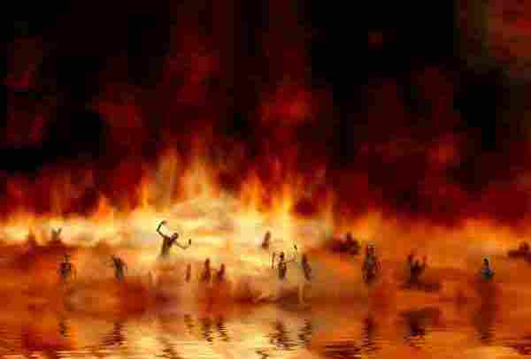
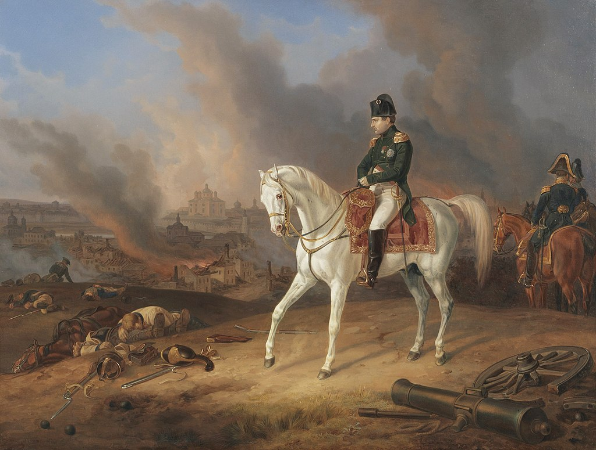
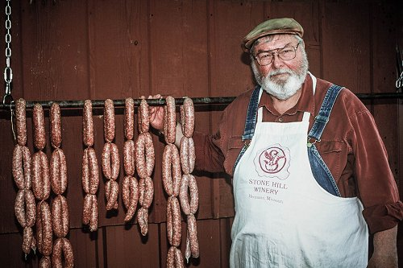

화염 속의 얼음 - 스몰렌스크 전투 (5)
게시: 2020-04-20T06:30:09+09:00
웅장한 성벽을 둘러싸고 벌어진 스몰렌스크 전투는 낮에도 장관이었으나 밤이 되자 더욱 장엄한, 어떻게 보면 무시무시한 광경을 연출했습니다. 프랑스군은 낮부터 박격포를 이용하여 좁은 스몰렌스크 시내에 계속 폭발탄을 쏘아넣고 있었습니다. 스몰렌스크 시내의 건물들은 대부분 나무로 지어진 것들이라서, 이 포격은 곳곳에서 화재를 일으켰고 밤이 되자 온 시내가 불바다가 되었습니다. 성 밖에서 포병들을 지휘하던 프랑스군 불라르(Boulart) 대령의 시선에는, 시커먼 성벽 위에서 불바다를 배경으로 총을 들고 움직이는 러시아군 병사들의 모습이 지옥불을 속에서 움직이는 꼬마 악마들의 모습처럼 보였습니다. 프랑스군의 팡텡 데 조두와르(Fantin des Odoards) 대위는 '단테도 지옥에 대한 묘사를 할 때 이 광경에서 깊은 영감을 얻을 것'이라고 기록했습니다.

(불과 악마는 항상 붙어다니는 것으로 묘사되지요. Don McLean의 명곡 'American Pie'의 가사 중에도 'Cause fire is the devil's only friend 라는 구절이 나옵니다. 반면에 스릴러 작가 스티븐 킹은 이제는 고전 명작으로 추앙되는 'The shining'에서 '불은 모든 것을 파괴한다'라면서 콜로라도 외딴 산 속 호텔의 악마를 보일러를 터뜨려 무찌르는 것으로 묘사합니다. 다른 소설 'The Stand'에서는 핵폭탄을 터뜨려 악마를 무찌르지요.)

(스몰렌스크 외곽에서 전투를 바라보는 나폴레옹의 모습입니다. 외젠 보아르네 휘하의 종군 화가이던 알브레히트 (Albrecht Adam)의 작품입니다.)
당시 나폴레옹의 마복시(le Grand Ecuyer)였던 콜렝쿠르(Caulaincourt)는 나폴레옹의 천막 바로 밖에서 이 광경을 지켜보고 있었는데, 누군가 어깨를 툭 치길래 돌아보았습니다. 나폴레옹이었습니다. 나폴레옹은 콜렝쿠르에게 불타는 스몰렌스크 시내의 광경이 베수비오(Vesuvius) 화산 같다면서 멋진 광경 아니냐고 물었습고, 콜렝쿠르는 이렇게 답했습니다. "Horrible, sire." (불어와 영어가 스펠링이 똑같군요. "끔찍하군요, 폐하" 라는 뜻입니다.) 드네프르 강 건너편 고지에서 스몰렌스크 시내를 바라본 러시아 기마근위대의 젊은 장교 욱스퀄(Boris von Uxkull)은 이 광경에 대해 이렇게 묘사했습니다. "나는 산 위에 서 있었다. 내 바로 발 아래에서 살육전이 벌어지고 있었다. 화재와 포격 섬광의 불빛이 그림자 속에서 더욱 크게 보였다. 불 붙은 심지로부터 빨간 빛의 궤적을 그리며 날아드는 폭발탄(bomb)들은 지나가는 경로의 모든 것을 파괴했다. 부상자들의 비명 소리와 아직 싸우는 병사들의 함성 소리, 부서져 내리는 바위의 둔탁한 굉음 소리에 내 몸의 털이 모두 곤두서는 것 같았다. 난 이날 밤 광경을 절대 잊지 못할 것이다."
(보리스 폰 욱스퀄은 에스토니아 출신의 독일계 귀족으로서 바클레이의 사령부에 배속되어 있었습니다. 그는 총 17회의 전투에 참전했었는데, 당시에는 소위(cornet) 계급이었습니다. 나중에 나폴레옹의 침략전 참전 때 썼던 일지를 '무기와 여인'이라는 낭만적인 제목의 회고록으로 출판했습니다.) 하지만 위의 묘사들은 프랑스군이든 러시아군이든 스몰렌스크 외부에서 쳐다본 사람들의 것이었고, 시내에 있는 사람들은 처지가 달랐습니다. 스몰렌스크 안팎의 시민들은 대부분 피난을 가지 않고 있었으며, 남자들은 아침 나절부터 벌어진 전투에서 쓰러진 병사들의 무기를 주워들고 러시아군을 도와 싸우고 있었습니다. 그들은 용맹한 러시아군이 반드시 프랑스군을 무찌를 것이라고 믿고 있었던 것입니다. 이들은 성벽 뒤로 후퇴한 뒤로도 희망을 잃지 않았으나, 밤이 되어 온 시내가 화염에 휩싸이자 결국 용기가 꺾였습니다. 이들은 먼저 성모 승천 성당에 몰려가 눈물로 기도를 드리다 결국 화재 속에서 가족들을 이끌고 다리를 건너 드네프르 강 북안으로 탈출했습니다. 이 광경은 당연히 혼란과 슬픔, 절망으로 버무려져 있었습니다. 상황이 이렇게 되자, 바클레이는 이제 후퇴를 위한 때가 무르익었다고 판단했습니다. 러시아군은 이미 2일 동안이나 프랑스군을 막아냈고, 그 과정에서 사상자도 1만 명 넘게 발생했으며, 언제라도 나폴레옹이 상류 쪽에서 도하해서 자신의 퇴로를 끊을지 모르는 상황이었으니까요. 그는 성모 승천 성당의 신성한 성화를 수레로 철수시킨 뒤, 스몰렌스크를 지키고 있던 독투로프에게 모든 식량과 물자, 기타 프랑스군에게 도움이 될 만한 모든 것에 불을 지르고 후퇴할 것과, 가장 중요한 사항, 즉 마지막 부대가 철수하면서는 드네프르 강에 놓인 다리를 파괴할 것을 지시했습니다. 바클레이의 이 명령은 즉각 러시아 장교들의 격렬한 반발을 일으켰습니다. 반발을 걱정하여 상류 지역으로 보내버렸던 바그라티온도 급전을 보내어 '최후까지 스몰렌스크 사수'를 요청했고, 러시아군 사령부에 일종의 참관인으로 와있던 영국 장군 로버트 윌슨(Sir Robert Wilson)까지도 바클레이의 철수 결정을 비난했습니다. 심지어 애초에 스몰렌스크처럼 전략적 가치가 없는 곳에서 싸우는 것에 반대했던 베니히센 장군조차도 갑자기 '최후의 1인까지 여기서 싸우다 죽자'라며 바클레이의 사령부에 쳐들어왔습니다. 베니히센은 짜르의 친동생이자 근위대 사령관인 콘스탄틴 대공과 함께 바클레이를 찾아왔는데, 격분한 콘스탄틴 대공은 겁쟁이 같은 명령은 즉각 철회하고 반대로 당장 프랑스군에 대해 총공격에 나설 것을 요구했습니다. 뿐만 아니라 사람들이 다 듣는 공개 석상에서 아래와 같은 모욕적 언사도 서슴치 않았습니다. "당신은 소세지나 만드는 독일인이자 배신자에 악당이야. 당신은 러시아를 팔아넘기고 있어 ! 난 더 이상 당신 명령에 따르지 않겠어 ! 난 근위대를 이제 바그라티온의 지휘권 밑으로 옮기겠다 !"

(독일하면 소세지를 연상하는 것은 당시에도 마찬가지였던 모양입니다.)
짜르의 친동생이 이런 막말을 면전에서 퍼부을 때 바클레이의 심정이 어땠을지는 모르겠으나, 당시 사람들의 기록에 따르면 바클레이는 그냥 차분히 콘스탄틴 대공을 째려보기만 하다가 딱 한마디로 콘스탄틴 대공의 계속되는 욕설을 중단시켰다고 합니다. "각자의 의무를 다하도록 하세요. 그리고 저도 제 의무를 다하도록 하겠습니다." 정말 그야말로 화염 속의 한조각 얼음 같은 침착함이었습니다. 그리고는 콘스탄틴 대공에게 '짜르에게 직접 바쳐야 할 중요한 편지'를 전달하는 임무를 주어 모스크바로 떠나라는 명령을 내리면서, 그가 지휘하던 근위대를 라브로프(Lavrov) 장군에게 넘기도록 했습니다.
(가장 이상적인 것은 불꽃 같은 병사들을 얼음 같은 지휘관이 이끄는 것이라고 봅니다. 다만, 그 불꽃 같은 병사들이 지휘관을 믿고 따라야 하겠지요. 바클레이의 경우는 지휘를 제대로 했다고 봅니다만, 부하들과의 소통 부족으로 결국 부하들의 신뢰를 얻지 못한 것이 가장 큰 문제였다고 할 수 있습니다.)
동트기 약 두 시간을 남겨두고 독투로프의 러시아 수비대는 모든 곳에 불을 지르고 다리를 넘어 후퇴했고, 거의 동시에 폴란드군이 무너진 성벽 틈을 통해 시내 진입에 성공했습니다. 이 폴란드 부대가 스몰렌스크 성문 중 하나를 열고 그 앞에 쌓인 시체와 벽돌 등의 장애물을 치운 뒤, 프랑스군이 마침내 스몰렌스크에 입성할 수 있었습니다. 떄는 동이 막 틀 때였고, 시내에는 무엇 하나 제대로 남아 있지 않은 참혹한 광경이었습니다. 곳곳의 폐허 중간중간에는 미처 피난을 가지 못한 주민들이 주저앉아 울고 있었습니다. 곳곳에 불에 탄 시체가 즐비했습니다. 그 시체들 중 상당수는 뒤엉킨 채 시커멓게 타고 오그라들어서 사람의 형체를 알아볼 수 없었으나, 시신 중에 혹은 시신 옆에 놓인 역시 시커멓게 탄 머스켓 소총의 총신 혹은 군도 등이 있어서 병사들의 시체라는 것을 알아볼 수 있을 정도였습니다. 시내로 입성한 한 독일인 병사는 자신이 걷고 있는 잿더미 투성이의 길이 사실 사람 시체의 재라는 것을 알고 기겁을 했는데, 어떤 불타버린 과수원 나무들 중 한 그루 밑에 시신 5~6구가 뭉쳐져 오그라 붙은 것을 보고 더욱 놀랐습니다. "그들은 틀림없이 부상병으로서, 화재가 시작되기 전에 과수나무 밑의 그늘에서 쉬도록 사람들이 거기에 끌어다 놓았을 것이다. 화염이 그들의 몸에 직접 닿은 것 같지는 않은데, 그 열기에 그들의 신경이 수축하여 다리를 오그라들게 만든 것 같았다. 말려올라간 입술 사이로는 하얀 이빨들이 드러나 보였는데, 텅 빈 두 개의 큰 피투성이 구멍은 눈이 있던 자리였다." 이런 광경은 나름 승리자로 스몰렌스크에 입성한 병사들의 사기에 큰 타격을 주었습니다. 당시 나폴레옹의 참모진에서 일했던 세귀르(Philippe Paul, comte de Ségur) 장군의 기록에는 이렇게 적혀 있습니다. "관전자가 없는 광경, 열매가 없는 승리, 우리가 정복한 것은 오직 연기 뿐." 그러나 스몰렌스크 전투에서 가장 결정적인 전투는 아직 끝나지 않은 상태였습니다. 바클레이가 우려하던 대로, 이미 상류에서는 프랑스군이 드네프르 강을 건넌 뒤에 러시아군의 퇴로를 끊기 위해 포진하고 있었습니다. 과연 바클레이는 이 위기를 어떻게 극복할 수 있었을까요 ?
Source : 1812 Napoleon's Fatal March on Moscow by Adam Zamoyski https://en.wikipedia.org/wiki/Battle_of_Smolensk_(1812)